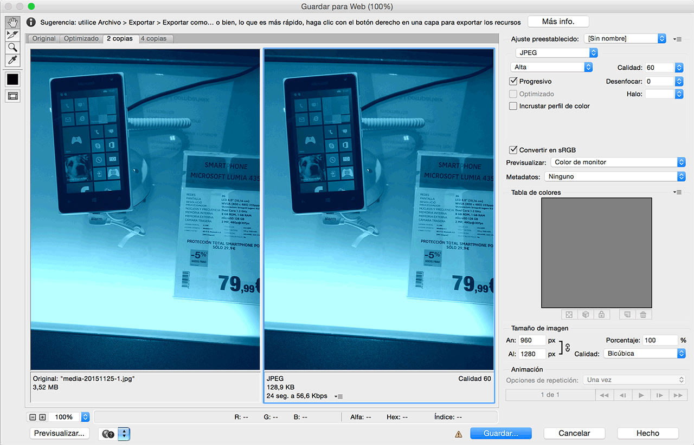

Optimización de imágenes
Hola, soy Nahuel Sotelo
Frontend developer en Schibsted Spain y Profesor de la asignatura Programación Frontend en el Master de Diseño Web de Bau.
Contenidos
- Introducción (coste de las imágenes)
- Bitmap
- Tipos de compresión
- Optimización manual
- Sprites
- Optimización automática
- SVG
- SVG aplicacion
- Nuevos formatos de imágen
El coste de las imágenes
“A picture is worth a thousand words, but its cost can be so much greater.”
Las imágenes son el recurso que más añade al peso total de la página.
En móvil la proporción se mantiene.

En móvil, el alto peso de las imágenes descargadas no sólo afecta la experiencia de usuario sino qu epuede tener un alto coste para su bolsillo dependiendo las condiciones de su plan de datos.
Un ejemplo: Performance is money, part 1: the end-user's wallet
Enlaces relacionados:
- “” -
Bitmap
GIF (1987)
- 256 colores
- Transparencia simple (no Alpha)
- Animación
- Compresión sin pérdida (Lossless)
- Buenos para: gifs de gatos.
- Malos para: casi todo lo demás.
JPG (1992)
- Color RGB (24 bits)
- Sin transparencia
- Sin animación
- Compresión con pérdida (Lossy)
- Buenos para: fotos (degradados suaves, areas de bajo contraste).
- Malos para logos (borders planos, areas de alto contraste).
PNG (1996)

- Paletas de color de 8 a 32 bits
- Transparencia por Canal Alpha
- Animación (pero sin soporte de navegadores :( )
- Problemas con la trasparencia en IE 6-8
- Compresión sin pérdida (Lossless)
- Buenos para: logos, ilustración (colores planos, bordes definidos, transparencia)
- Malos para: fotografía
Enlaces relacionados:
Tipos de compresión
Lossy Compression
Es un tipo de compresión que ocasiona perdida de información durante el proceso.
La información perdida no se recupera cuando el cliente descomprime la imágen para representarla, por lo que es importante evaluar el ratio peso/calidad que queremos para como resultado final.
Ejemplo de lossy compression
| Antes | Después |
|---|---|
| 0.123, 1.2345, 21.2165, 12.123 | 0,0,20,10 |
Lossless Compression
Este tipo de compresión consigue a base de diferentes algoritmos reducir el peso de los ficheros sin perder información.
La redución de tamaño no suele ser tan drástica como la de una compresión lossy pero la imágen se descomprime intacta.
Ejemplo de lossy compression
| Antes | Después |
|---|---|
| aaaaabbbbbcccddddeeeeffffaaaaabb | a5b4c2d4e4f4a5bb0 |
Enlaces relacionados:
- “Image Compression: Putting your Images on a Diet” - Guy Podjarny
Optimización manual
Guardar para web en Photoshop

- Elegir el formato adecuado
- JPG: Elegir el nivel de compresion (75-70 óptimo)
- PNG: Limitar la paleta de colores
- Opcional: Activar la opción de descarga progresiva (JPG) / entrelazada (PNG)
- Quitar la metadata (sino la necesitamos)
Aplicaciones de optimización
Enlaces relacionados:
- “” -
Vectores
SVG (2001)
Monster Inc. (2001)
- Gráficos vectoriales en formato XML.
Sprites
La técnica de sprites proviene de la industria del videojuego y consiste en combinar diferentes imágenes en una sóla para luego acceder solo al fragmento de imágen que necesitamos en cada caso.
En web, esto nos permite tener una sola llamada al servidor en lugar de una por cada imágen.
Sprites por imágen
.icon {
background-image: url('img/sprite.png');
background-repeat: no-repeat;
width: 24px;
height: 24px;
}
.icon--alert { background-position: 0px 0px; }
.icon--favorite { background-position: 0px -24px; }
.icon--share { background-position: -48px -24x; }
.icon--mail { background-position: 0 -48px; }
...
Sprites por css
[class^=icon-] {
background-repeat: no-repeat;
}
.icon-github {
background-image: url('data:image/png;base64,iVBORw0KGgoAAAANS...');
}
.icon-twitter {
background-image: url('data:image/png;base64,OP444iVBORve=w0KG...');
}
.icon-facebook {
background-image: url('data:image/png;base64,AAff33VBORw0Kojij...');
}
Bad practice? (“On Mobile, Data URIs are 6x Slower than Source Linking”)
Enlaces relacionados:
- “Saving Bandwidth and Improving Site Speed Using CSS Sprites” - Peter Richards
Optimización automática
JPG / GIF / PNG
SVG
-
Svgo
- grunt-svgmin
- gulp-svgmin
Sprites
Enlaces relacionados:
- “Tools for image optimization” - Addy Osmani
- “Grunt and Gulp tasks for performance optimization”
- “Advanced Image Compression Techniques Tutorial” - Tobias Baldauf